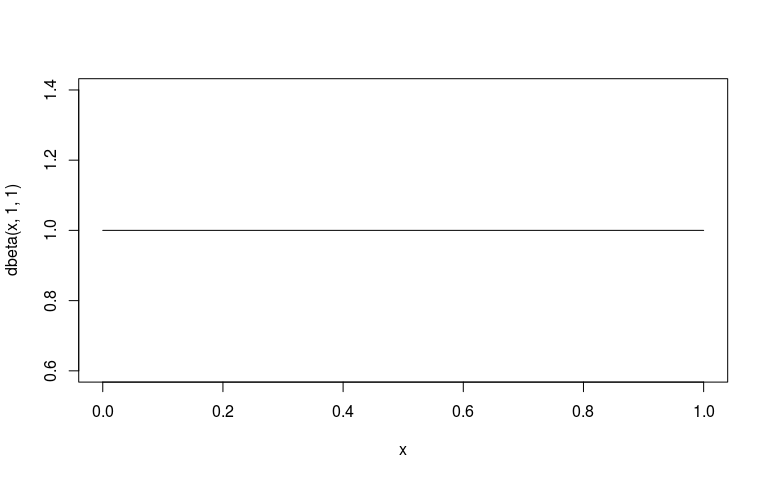
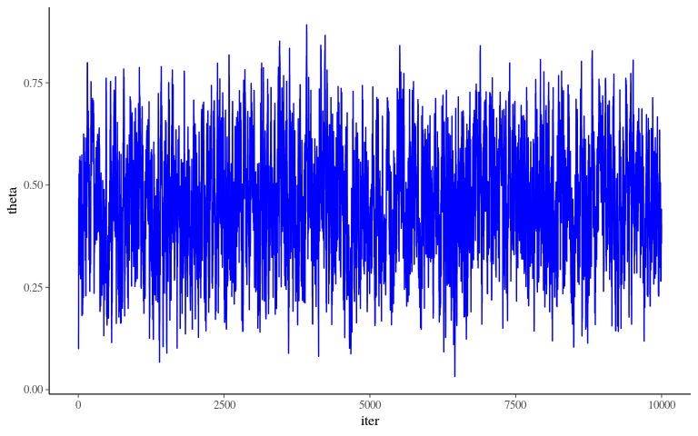
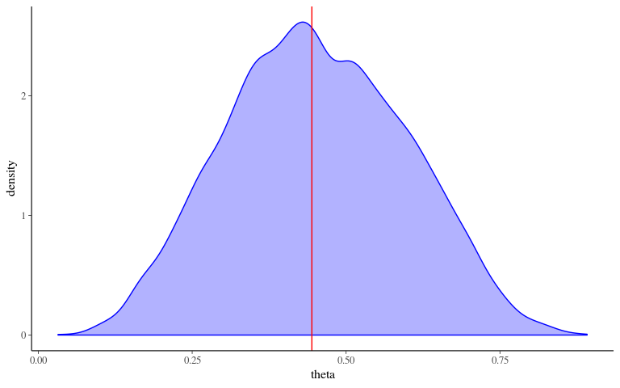
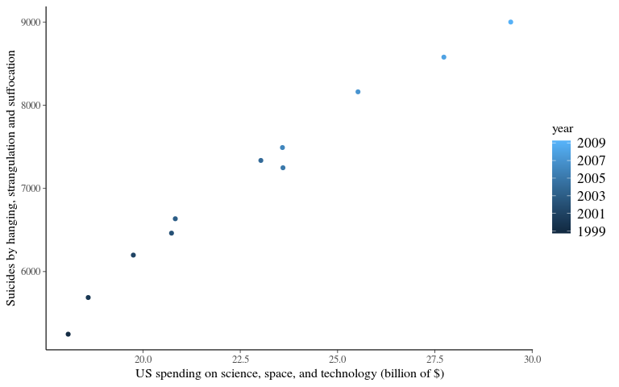
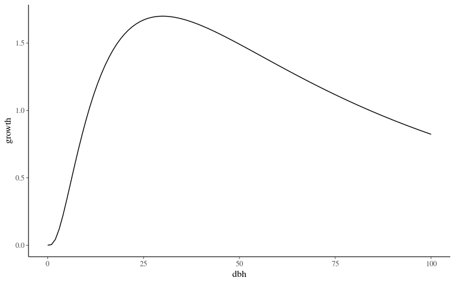
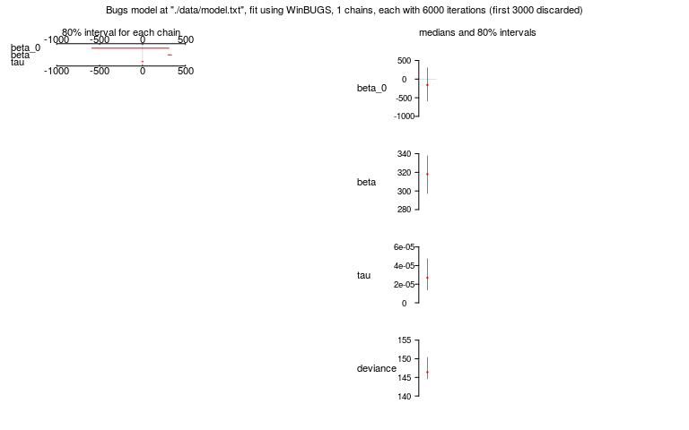
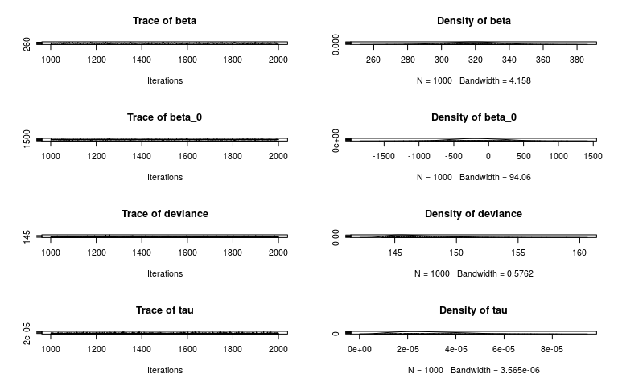

Introduction to bayesian modelling with WinBUGS
Sylvain SCHMITT
November 7, 2019, EFT Msc, ECOFOG
Introduction
Why
- Cleaned and secured data
- Computer > R > Import > Check > Happy :)
- What is your question ?
- Imagine some strange twisted wavering distorted curves in your scatter plot
- But you resign yourself to linearity typing
lm()
Why Bayes
- Express your beliefs/expertise about parameters
- Properly account for uncertainty
- Handle small data
- Any form of model
Theory
Bayes theorem- Proba version
\[P(A|B) = \frac{P(A \cap B)}{P(B)}\] \[P(A|B)P(B) = P(A \cap B) = P(B|A)P(A)\] \[P(A|B) = \frac{P(B|A)P(A)}{P(B)}\]
Bayes theorem
\[p(\theta|y) = \frac{p(\theta)*p(y|\theta)}{p(y)}\]
- \(p(\theta)\) represents what someone believes about \(\theta\) prior to observing \(y\)
- \(p(\theta|y)\) represents what someone believes about \(\theta\) after observing \(y\)
- \(p(y|\theta)\) is the likelihood function
- \(p(y)\) is the marginal likelihood equal to \(\int p(y|\theta)*p(\theta)*d\theta\)
Bayes theorem
\[p(\theta|y) = \frac{p(\theta)*p(y|\theta)}{p(y)}\]
\[p(hypothesis|data) \propto p(hypotheses)*p(data|hypothesis)\]
\[posterior \propto prior*likelihood\]
\[updated~belief \propto prior~belief*current~evidence\]
Gender example
Data - Chance to pick a girl to the chalkboard ?
A classroom with boys and girls
\(\theta\) approximation
Data - Chance to pick a girl to the chalkboard
A classroom with boys and girls
\(\theta\) approximation
## [1] 0.4444444Likelihood - Law ?
\(p(y|\theta)\)
Back to maths
\[Y \sim ?\]
Likelihood - Law
\(p(y|\theta)\)
Back to maths
\[Y \sim \mathcal B(\theta,n)\]
Likelihood - Formula
\(p(y|\theta)\)
Back to maths
\[Y \sim \mathcal B(\theta,n)\] \[p(y|\theta)=\prod_{n=1}^N \theta^{y_n}*(1-\theta)^{1-y_n}\] \[log(p(y|\theta))=\sum_{n=1}^N{y_n}*log(\theta) + \sum_{n=1}^N(1-y_n)*log(1-\theta)\]
Likelihood - R code ?
\[p(y|\theta)=\prod_{n=1}^N \theta^{y_n}*(1-\theta)^{1-y_n}\] \[log(p(y|\theta))=\sum_{n=1}^N{y_n}*log(\theta) + \sum_{n=1}^N(1-y_n)*log(1-\theta)\] \[p(y|\theta=0.1) = ?\]
Likelihood - R code
\[p(y|\theta)=\prod_{n=1}^N \theta^{y_n}*(1-\theta)^{1-y_n}\] \[log(p(y|\theta))=\sum_{n=1}^N{y_n}*log(\theta) + \sum_{n=1}^N(1-y_n)*log(1-\theta)\] \[p(y|\theta=0.1) = ?\]
log_likelihood <- function(theta, y)
sum(log(theta)*y + log(1-theta)*(1 -y))
log_likelihood_dbinom <- function(theta, y)
sum(dbinom(y, size = 1, prob = theta, log = T))
log_likelihood(0.1, y)## [1] -9.737143## [1] -6.624756Priors - Form ?
\(p(\theta)\) ? No information ? Non informative prior !
\[\theta \sim ?\]
Priors - Form ?
\(p(\theta)\) ? No information ? Non informative prior !
\[\theta \sim \mathcal U (0, 1)\] \[\theta \sim \mathcal B (1, 1)\]
Priors - Gamma law
\[X \sim \Gamma(\alpha,\beta)~,~f(x)=\frac{\beta^\alpha x^{\alpha-1}e^{-\beta x}}{\Gamma(\alpha)}~,~\Gamma(z)=\int_0^1x^{z-1}e^{-x}dx\]

Priors - Beta law
\[X \sim B (\alpha,\beta)~,~f(x)=\frac{x^{\alpha-1}(1-x)^{\beta-1}}{B(\alpha,\beta)}~,~B(\alpha,\beta)=\frac{\Gamma(\alpha)\Gamma(\beta)}{\Gamma(\alpha+\beta)}\]

Priors - Form
\[p(\theta) \sim \mathcal B(1,1)\]

Posterior - Inference ?
\(p(\theta|y) \propto ~?\)
Posterior - Inference
\(p(\theta|y) \propto \mathcal L(y|\theta)p(\theta)\)
\(\mathcal L(y|\theta) = \prod_{n=1}^N \theta^{y_n}*(1-\theta)^{1-y_n}\)
\(p(\theta) = \frac{\theta^{\alpha-1}(1-\theta)^{\beta-1}}{B(\alpha,\beta)}~|\alpha=\beta=1\)
\(p(\theta|y) \propto \mathcal \prod_{n=1}^N \theta^{y_n}*(1-\theta)^{1-y_n}*\frac{\theta^{\alpha-1}(1-\theta)^{\beta-1}}{B(\alpha,\beta)}\)
Posterior - Inference
- \(p(\theta|y) \propto \mathcal L(y|\theta)p(\theta)\)
- Practically: prior \(p(\theta)\) + data \(y\) => posterior \(p(\theta|y)\)
- moving from a priori => a posteriori is nearly impossible analytically (excepted for conjugated laws, i.e. beta-binomial here)
- => Numerical methods MCMC to infer a posteriori laws
Markov Chain Monte Carlo - Methods
inference based on the simulation of a high number of random variables
Advantages
- may be applied to a wide range of problems
- a few underlying hypotheses
- easy to implement
Constraints
- a good random generator
- computational power
- likelihood-explicit
MCMC - Algorithm
- Choose initial parameters = Initialisation
- Compute likelihood and posterior values for those parameters
- Choose randomly new parameters thanks to a proposition function = random walk
- Compute previous and new posterior fraction \(\frac{posterior_{new}}{posterior_{old}}\)
- Accept or reject the new parameters set picking a random value \(u\) in a uniform law \(\mathcal U [0,1]\) if \(u \leq \frac{posterior_{new}}{posterior_{old}}\)
- Repeat, repeat, … thousand of times !
MCMC - Algorithm

MCMC - Algorithm
Now code your own MCMC in R !
MCMC - Algorithm - Likelihood
\[p(y|\theta)=\prod_{n=1}^N \theta^{y_n}*(1-\theta)^{1-y_n}\]
MCMC - Algorithm - Random walk ?
\[p(\theta|y) \propto p(\theta)*p(y|\theta)\]
MCMC - Algorithm - Random walk ?
\[p(\theta|y) \propto p(\theta)*p(y|\theta)\]
MCMC - Algorithm - Random walk
\[p(\theta|y) \propto p(\theta)*p(y|\theta)\]
walk <- function(theta_old, y, sigma_explore = 0.1){
theta_new <- rnorm(1, theta_old, sigma_explore)
if(theta_new < 0)
theta_new <- 10^-6
if(theta_new > 1)
theta_new <- 1-10^-6
ratio <- (dbeta(theta_new, 1, 1)*likelihood(theta_new, y)) / (dbeta(theta_old, 1, 1)*likelihood(theta_old, y))
if(runif(1) < ratio){
return(theta_new)
} else {
return(theta_old)
}
}
walk(0.1, y)## [1] 0.1## [1] 0.5329307MCMC - Algorithm - Sampling ?
MCMC - Algorithm - Sampling
MCMC - Algorithm - Diagnostic

MCMC - Algorithm - Posterior
data.frame(iter = 1:n_iter, theta = theta) %>%
ggplot(aes(theta)) +
geom_density(col = "blue", fill = "blue", alpha = 0.3) +
geom_vline(xintercept = sum(y)/length(y), col = "red")
Science & Suicides
Data - Table
US spending on science, space, and technology vs Suicides by hanging, strangulation and suffocation
data <- data.frame(year = 1999:2009,
suicide = c(5247, 5688, 6198, 6462, 6635, 7336, 7248,
7491, 8161, 8578, 9000),
science = c(18.079, 18.594, 19.753, 20.734, 20.831,
23.029, 23.597, 23.584, 25.525, 27.731, 29.449))Data sources: U.S. Office of Management and Budget and Centers for Disease Control & Prevention
Data - Plot

Frequentist vs Bayesian
\[Y \sim ?\]
- Frequentist: ?
- Bayesian: ?
Frequentist vs Bayesian
\[Y \sim \mathcal N ( \beta_0 + \beta X,\sigma)\]
- Frequentist: Least Square
\[min(\sum(\hat Y- Y))\]
- Bayesian: Likelihood
\[max(P(\hat{Y}=Y))\] \[P(Y|(\beta_0,\beta, \sigma)) \sim \mathcal N(\hat{Y},\sigma)\] \[P(Y|(\beta_0,\beta, \sigma)) \sim \mathcal N(\beta_0 + \beta X,\sigma)\]
Likelihood - Explicit
\[P(Y|(\beta_0,\beta, \sigma)) \sim \mathcal N(\hat{Y},\sigma)\] \[P(x) = \frac{1}{\sigma\sqrt{2\pi}} e^{-\frac12(\frac{x-\mu}{\sigma})^2}\] \[P(Y|(\beta_0,\beta, \sigma)) = \frac{1}{\sigma\sqrt{2\pi}} e^{-\frac12(\frac{Y-\hat Y}{\sigma})^2}\] \[\mathcal L(Y|(\beta_0,\beta, \sigma)) = \prod P(Y|(\beta_0,\beta))\] \[log \mathcal L(Y|(\beta_0,\beta, \sigma)) = \sum \frac{1}{\sigma\sqrt{2\pi}} e^{-\frac12(\frac{Y-\hat Y}{\sigma})^2}\] \[log \mathcal L(Y|(\beta_0,\beta, \sigma)) = \sum \frac{1}{\sigma\sqrt{2\pi}} e^{-\frac12(\frac{Y-\beta_0+\beta*X}{\sigma})^2}\]
Growth model
Model form ?
\[log(AGR_i+1) \sim \mathcal N (G_{max} * e^{-\frac12(\frac{log(\frac{DBH}{D_{opt}})}{K_s})^2}, \sigma)\]
Model form

\(G_{max}\) prior
\(G_{max} \sim \mathcal N ( \mu_G , \sigma_G)\)
\(G_{max}\) posterior ?
\(p(G_{max}|K_s, D_{opt}, \sigma) = ~?\)
\(G_{max}\) posterior
\[p(G_{max}|K_s, D_{opt}, \sigma) = \prod_1^n \frac1{\sigma\sqrt {2\pi}} e^{-\frac12(\frac{Y-\hat Y}\sigma)^2}*\frac1{\sigma_G\sqrt{2\pi}}e^{-\frac12(\frac{G_{max}-\mu_G}\sigma)^2}\] \[f(DBH) = exp(-\frac12(\frac{log(\frac{DBH}{D_{opt}})}{K_s})^2\] \[p(G_{max}|K_s, D_{opt}, \sigma) = \prod_1^n \frac1{\sigma\sqrt {2\pi}} e^{-\frac12(\frac{Y-G_{max}*f(DBH)}\sigma)^2}*\frac1{\sigma_G\sqrt{2\pi}}e^{-\frac12(\frac{G_{max}-\mu_G}\sigma)^2}\]
\(G_{max}\) posterior
\[p(G_{max}|K_s, D_{opt}, \sigma) = \prod_1^n \frac1{\sigma\sqrt {2\pi}} e^{-\frac12(\frac{Y-G_{max}*f(DBH)}\sigma)^2}*\frac1{\sigma_G\sqrt{2\pi}}e^{-\frac12(\frac{G_{max}-\mu_G}\sigma)^2}\] \[p(G_{max}|K_s, D_{opt}, \sigma) \sim \mathcal N( \frac{\sigma^2\sum_1^n f(DBH)Y+\frac{\mu_G}{\sigma_G^2}}{\sigma^2\sum_1^n f(DBH)^2+\frac{1}{\sigma_G^2}}, \frac{1}{\frac1{\sigma^2}\sum_1^n f(DBH)^2+\frac{1}{\sigma_G^2}})\]
WinBUGS
BUGS
Bayesian inference Using Gibbs Sampling
DAG
- Directed Acyclic Graphs: Allow to build graphically a model (didactic)
- Node: “variables”
- stochastic: “variables” following a low
- stochastic: “variables” resulting from an operation (i.e. \(\mu\))
- constant: “variables” not varying (i.e. data)
- Arrows: link between “variables”
- solid: stochastic dependence
- hollow: logical function
- Plates: define vector with data indices (i.e. \(X[i]\))
- Node: “variables”
Sience and Suicides - DAG ?
\[Y \sim \mathcal N ( \beta_0 + \beta X,\sigma)\]
- Doodle > New…
- Click to create a new node in the model ;
- select a box and then “Ctrl” + click on the 2 box to create arrows (links between nodes)
- when you’re happy with your doodle, Doodle > Write code… and the code corresponding to your model will appear in a new window.
Sience and Suicides - DAG

Sience and Suicides - Model 1
Sience and Suicides - Model 2
Sience and Suicides - Inference
- Model > Specification…
- double click on the word “model” (in your script) and then “check model” (in specification tool)
- upload data from a text file : File > Open…
- write it as a list : list(X = c(…), Y = c(…))
- double click on the word “list” and click on “load data” (in specification tool)
- “Compile” (in specification tool)
- write a set of initial parameters values : list( tau = …, beta_0 = …, beta = …)
- double click on the word “list”
Sience and Suicides - Data
US spending on science, space, and technology vs Suicides by hanging, strangulation and suffocation
Sience and Suicides - Inits
Sience and Suicides - Inference
- Inference > Samples…
- Write nodes (parameters of interest) and “Set”
- Model > Update > updates (sets number of iterations) : write a sufficiently large number (eg 10000)
- Click on “update” to run the MCMC
- Back to Sample Monitor Tool : choose node to watch and check density (histogram of values taken after the burning period), history (chain of values, stats…)
Sience and Suicides - Result
\(\tau = 2.88*10^-5,~\beta_0 = -154.7, ~\beta = 317.8\)

R2WinBUGS - Packages
## Loading required package: coda## Loading required package: bootR2WinBUGS - Inference
model <- "./data/model.txt"
data <- list(Y = c(5247, 5688, 6198, 6462, 6635, 7336, 7248, 7491, 8161, 8578, 9000), X = c(18.079, 18.594, 19.753, 20.734, 20.831, 23.029, 23.597, 23.584, 25.525, 27.731, 29.449))
inits <- list(list(tau = 1, beta_0=0, beta=100))
Niter <- 6e3
Nburning <- ceiling(Niter/2)
Nthin <- 5
parameters <- c('beta_0','beta','tau')
resu.bugs <- bugs(data, inits, parameters, model,
n.chains = 1, n.iter = Niter, n.burnin = Nburning,
bugs.directory = "./documents/Initiation Bayes et WinBugs/Winbugs/WinBUGS14/",
working.directory = getwd())
codaobj <- read.bugs('coda1.txt')## Abstracting beta ... 1000 valid values
## Abstracting beta_0 ... 1000 valid values
## Abstracting deviance ... 1000 valid values
## Abstracting tau ... 1000 valid valuesR2WinBUGS - Results
## Inference for Bugs model at "./data/model.txt", fit using WinBUGS,
## 1 chains, each with 6000 iterations (first 3000 discarded), n.thin = 3
## n.sims = 1000 iterations saved
## mean sd 2.5% 25% 50% 75% 97.5%
## beta_0 -152.5 370.1 -874.4 -386.3 -159.1 87.1 593.6
## beta 317.6 16.1 286.2 307.2 318.1 328.1 348.6
## tau 0.0 0.0 0.0 0.0 0.0 0.0 0.0
## deviance 147.1 2.4 144.2 145.3 146.4 148.2 153.4
##
## DIC info (using the rule, pD = Dbar-Dhat)
## pD = 3.0 and DIC = 150.0
## DIC is an estimate of expected predictive error (lower deviance is better).R2WinBUGS - Results

R2WinBUGS - Results

Conclusion
Bayes theorem
\[p(\theta|y) = \frac{p(\theta)*p(y|\theta)}{p(y)}\]
\[p(hypothesis|data) \propto p(hypotheses)*p(data|hypothesis)\]
\[posterior \propto prior*likelihood\]
Model choice
- Prior, laws, and model forms knowledge
- Fitting techniques and tricks
- center, reduce, bound, link…
- Try and compare
- convergence, parameters number, likelihood, prediction quality
- e.g. \(\hat{R}\), \(K\), \(log(\mathcal{L})\), \(RMSEP\)…
Other tools - stan

Other tools - greta

References
- WinBUGS help
- WinBUGS youtube tutorial
- Michael Clark blog Become a bayesian with R & stan
stanwebsitegretawebsite